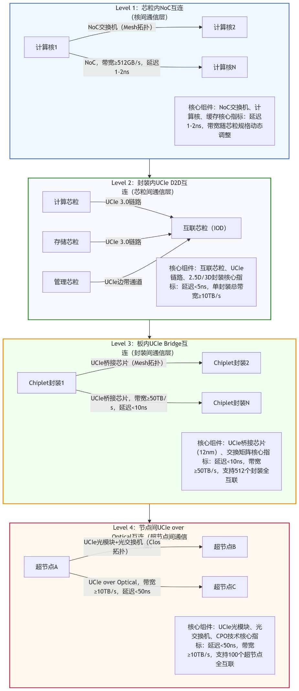

多 Die 堆叠技术（Chiplet 与 UCIe）¶
多 Die 堆叠技术 ¶
本节聚焦多 Die/Chiplet 堆叠：它是超节点在“算力密度、带宽密度、能效与成本”四个维度继续演进的关键工程路径。与单纯扩大单芯片不同，多 Die 堆叠的核心是把关键互联距离从“板级 / 连接器级”压缩到“封装 / 微互联级”，从而为更高带宽、更低单位比特能耗、以及更强的系统语义（寻址 / 原子 / 一致性能力）创造条件。
在工程落地上，建议把“多 Die 堆叠”拆成三个可讨论的约束面：
- 互联与协议：Die-to-Die（D2D）互联决定了堆叠能否规模化复制；UCIe 等标准化分层接口有助于降低跨厂商 / 跨代际集成成本。
- 供电与散热：堆叠会把热点推入封装内部，PDN 与热路径往往比信号更先成为瓶颈，需要与液冷 / 冷板 / 热扩散结构协同设计。
- 测试与可靠性：堆叠越深越需要“分层测试 + 可追溯遥测”闭环（Known-Good-Die、封装前后测试、运行时错误隔离
） ，否则系统级良率与运维成本会反向吞噬带宽收益。
Chiplet（芯粒）是超节点不可或缺的核心组成部分，其核心用途是通过功能解耦、工艺分治、异构集成，突破单芯片性能极限、优化互联效率、控制量产成本、实现线性扩展，解决超节点在算力密度、带宽、延迟、可靠性上的核心痛点。如果没有 Chiplet 的模块化异构集成，超节点将无法实现高密度算力聚合，也无法适配多场景高端算力需求，其 " 高效算力、灵活扩展 " 的核心价值将无法落地。
UCIe（Universal Chiplet Interconnect Express）作为裸片间（Die-to-Die, D2D）开放互联标准之一，为 Chiplet 的规模化应用提供了更清晰的分层接口边界（物理层 / 适配层 / 协议层
Chiplet 在超节点中的场景与用途 ¶
Chiplet 的出现是后摩尔时代超节点发展的必然选择，其在超节点中的应用场景、核心用途与重要性，均围绕超节点 " 高密度、高带宽、低延迟、可扩展、高可靠 " 的核心需求展开，是超节点架构设计的核心逻辑支撑，也是区别于传统服务器集群的关键技术特征。
核心应用场景 ¶
Chiplet 在超节点中的应用场景高度聚焦于高端算力需求，核心覆盖三大类场景：
-
万亿参数级 AI 大模型训练场景：超节点最核心的应用场景，核心需求是超高算力密度（单机柜 ≥1 EFLOPS
） 、超大带宽（单机柜 ≥50 TB/s） 、超低延迟（端到端 <10 μs） ，以及全局内存共享能力，用于支撑万亿参数大模型的分布式训练。Chiplet 通过模块化聚合计算芯粒、存储芯粒，实现算力与带宽的精准匹配，解决大模型训练中的 " 算力不足、内存瓶颈、通信延迟高 " 三大痛点。 -
E 级科学计算场景：E 级超算（每秒 1000 万亿次浮点运算）是科学计算的核心载体，适配流体力学、量子计算、气象预测、航空航天仿真等复杂场景，核心需求是高精度计算、高可靠性（99.999% 以上
） 、低延迟互联。Chiplet 通过 CPU 与 FPGA 异构集成，优化互联效率与可靠性，支撑高精度科学计算任务的高效运行。 -
自主可控高端算力场景：聚焦政务、金融、国防等核心领域，核心需求是全产业链自主可控，摆脱对国外先进工艺、芯粒与协议的依赖，实现高端算力自主供应。Chiplet 通过国产芯粒的模块化集成，结合国产 UCIe 兼容协议，构建自主可控的超节点架构，保障核心领域算力安全。
核心用途 ¶
结合超节点的场景需求，Chiplet 在超节点中承担五大核心用途，每一项均对应超节点的核心痛点：
-
算力聚合，突破单芯片性能极限：超节点要求单机柜实现千卡级芯片聚合，单芯片算力已无法满足需求，而单片 SoC 受限于光刻场尺寸、良率与功耗墙，无法通过扩大芯片面积提升算力。Chiplet 将计算功能拆解为多颗独立计算芯粒，采用先进工艺单独流片，再通过先进封装集成，实现算力模块化聚合。
-
功能解耦，优化超节点互联效率：传统单片 SoC 将互联、IO、电源管理等功能与计算功能集成，稀释计算资源且互联效率低下。Chiplet 将互联功能解耦为独立互联芯粒，专门负责芯粒间、节点间高速互联，使计算芯粒聚焦算力输出，大幅提升互联效率。
-
异构融合，适配多场景算力需求：超节点需适配 AI 训练、科学计算等多场景，不同场景对算力类型需求不同（AI 需 NPU/GPU，科学计算需 CPU/FPGA
） 。Chiplet 通过模块化特性，可按需组合不同类型芯粒，形成定制化算力模块，实现异构算力融合。 -
成本与良率优化，支撑规模化部署：超节点规模化部署需兼顾成本与良率，单片 SoC 先进工艺流片成本高、良率低。Chiplet 采用工艺分治，核心计算芯粒用先进工艺，非核心芯粒用成熟工艺，同时小尺寸芯粒良率远高于单片 SoC，大幅降低量产成本与风险。
-
线性扩展，适配算力迭代需求：Chiplet 采用标准化接口，可实现 " 即插即用 " 扩展，通过增加芯粒模块实现算力线性提升，无需重新设计整个系统，降低升级成本与周期。
核心重要性 ¶
Chiplet 在超节点中具有不可替代的核心地位，其重要性体现在三个层面：
-
技术层面：Chiplet 是超节点突破单芯片性能极限的核心路径。没有 Chiplet 的模块化聚合，超节点无法实现千卡级算力密度，也无法解决互联效率与内存瓶颈。同时，Chiplet 的异构融合能力，是超节点适配多场景的核心支撑，传统单片 SoC 无法实现多种异构算力的高效集成。
-
工程层面：Chiplet 的成本与良率优化，是超节点规模化部署的前提。没有 Chiplet 的工艺分治，超节点的量产成本将超出经济可行性；其线性扩展能力，使超节点能够跟上算力增长节奏，具备长期应用价值。
-
产业层面：在自主可控场景中，Chiplet 是实现高端算力自主化的核心载体。通过国产芯粒的模块化集成，可摆脱对国外芯片的依赖，保障核心领域算力安全；同时推动先进封装、互联协议等相关产业升级，完善高端算力产业链。
Chiplet 与 UCIe 核心技术解析 ¶
Chiplet 与 UCIe 的技术融合，是超节点统一互连体系构建的核心。
Chiplet 核心技术 ¶
Chiplet 的核心技术围绕 " 模块化设计、先进封装、芯粒互联 " 三大环节展开，其技术核心是实现不同功能、不同工艺芯粒的高效集成与高速互通。
技术框架 ¶
Chiplet 的技术框架分为三层：
-
芯粒设计层：核心是功能解耦与标准化设计，将超节点的算力、存储、互联、管理功能拆解为独立芯粒，每个芯粒聚焦单一功能，采用模块化设计，确保芯粒的复用性与可扩展性。芯粒接口采用标准化设计（如 UCIe
） ，确保不同厂商、不同工艺的芯粒能够无缝对接。核心技术包括芯粒功能划分、接口标准化设计、低功耗设计等。 -
封装集成层：核心是先进封装技术，负责将多颗芯粒集成为一个完整的封装模块，实现芯粒间的高速互联。超节点中主要采用 2.5D/3D 先进封装技术，核心技术包括硅中介层（Interposer
） 、凸点（Bump）制造、芯粒对齐、热管理等，确保封装的高密度、高可靠性与低延迟。 -
互联适配层：核心是芯粒间的高速互联技术，负责实现不同芯粒间的数据传输，超节点中主要采用 UCIe 标准互联，核心技术包括链路训练、信号完整性优化、流量控制等，确保芯粒间的高速、可靠通信。
超节点常用 Chiplet 类型 ¶
| Chiplet 类型 | 核心功能 | 工艺选择 | 超节点应用场景 | 核心指标参考 |
|---|---|---|---|---|
| 计算芯粒（Compute Die） | 核心算力输出，承担 AI 训练、科学计算等核心任务 | 3nm/5nm/7nm 先进工艺 | AI 大模型训练、E 级科学计算 | 算力：128–256 TFLOPS（FP16 |
| 互联芯粒（IOD） | 芯粒间、封装间、节点间高速互联，负责数据交换 | 12nm/14nm 成熟工艺 | 所有超节点场景，核心互联载体 | 双向带宽：4–6 TB/s，延迟：<5 ns |
| 存储芯粒（Memory Die） | 内存扩展与共享，提供高带宽存储访问 | 8nm/10nm 工艺 | AI 大模型训练、科学计算 | 容量：16–32 GB，带宽：2.0–3.2 TB/s |
| 管理芯粒（Management Die） | 电源管理、故障监控、时序控制、安全管控 | 28nm 成熟工艺 | 所有超节点场景，保障系统稳定 | 可靠性：99.999%，响应时间：<10 ms |
| 加速芯粒（Accelerator Die） | 专用计算加速（如 FPGA/TPU |
7nm/12nm 工艺 | 科学计算、特定 AI 任务加速 | 算力：128 TFLOPS，延迟：<4 ns |
超节点核心封装技术 ¶
超节点的 Chiplet 集成高度依赖 2.5D/3D 先进封装技术，核心封装技术的选择直接影响超节点的性能、可靠性与成本。
2.5D CoWoS 封装技术
全称 Chip on Wafer on Substrate，是超节点中最常用的封装技术，核心是通过硅中介层实现多颗芯粒的互联。硅中介层采用高密度布线，凸点间距控制在 5 μm 以下，实现芯粒间的高速互联；单封装内可集成 8–16 颗芯粒，互联带宽达到 10–16 TB/s，延迟 <5 ns。该技术的优势是兼容性强，可集成不同尺寸、不同工艺的芯粒，成本相对 3D 封装较低，适配超节点的规模化部署需求；缺点是互联密度低于 3D 封装，功耗略高。
3D Foveros 封装技术
属于堆叠式封装，核心是将多颗芯粒垂直堆叠，互联距离从微米级降至纳米级，大幅提升互联密度与带宽。该技术采用 Cu-Cu 键合工艺，凸点间距控制在 2 μm 以下，单封装内可集成 16–32 颗芯粒，互联带宽达到 20 TB/s 以上，延迟 <3 ns。优势是互联密度高、延迟低、功耗低，适配超高算力超节点需求；缺点是成本高、工艺复杂，良率相对较低，主要用于高端 AI 训练超节点。
UCIe 核心技术与协议解析 ¶
UCIe 是面向 Chiplet 裸片间互联的开放工业标准，核心价值是实现 Chiplet 跨厂商、跨工艺、跨架构的互通，为超节点构建统一的互联体系。UCIe 采用三层协议架构，各层协议精准适配 Chiplet 互联需求。
协议核心架构 ¶
UCIe 协议分为物理层（PHY
物理层（PHY）
Chiplet 互联的物理载体，负责定义电气特性、链路训练、信号完整性与可靠性，是 UCIe 协议的基础。超节点中采用 UCIe-A（Advanced）模式，适配 2.5D/3D 先进封装，核心技术包括：
- 速率与带宽：UCIe 3.0 版本采用 QDR（四数据速率）采样技术，基础时钟 16 GHz，单通道速率 64 GT/s，单 x64 链路双向带宽可达 2 TB/s，可通过多组链路聚合提升带宽。
- 链路训练与校准：支持动态链路训练与实时重校准，初始化阶段通过训练序列调整信号幅度、相位与均衡参数，运行过程中每 10 ms 校准一次，补偿 PVT（工艺、电压、温度）变化带来的信号漂移。
- Lane 冗余与修复：预留 10%–15% 的冗余 Lane，当某条 Lane 失效时，自动切换至冗余 Lane，无需中断系统运行，同时支持运行时修复，提升链路可靠性。
- 能效优化：采用动态电压调节、快速关断机制，典型能效 <0.3 pJ/bit，较板级 PCIe 节能 90% 以上。
适配层（Adapter Layer）
物理层与协议层的桥梁，负责链路管理、流量控制、错误处理与多协议复用：
- 链路管理：实现链路初始化、状态协商与状态监控，芯粒上电后自动协商链路宽度、速率等参数，实时监控链路状态（正常、降级、失效
） ，异常时触发降级或切换机制。 - 流量控制：采用信用（Credit）机制，接收端向发送端反馈可用缓存空间，发送端根据信用值调整发送速率，避免缓存溢出；支持差异化信用分配，优先保障高优先级数据传输。
- 错误处理：采用 CRC 校验、重传机制与错误隔离，数据传输过程中进行 CRC 校验，校验失败触发重传，同时将错误局限于单条链路或单个芯粒，避免错误扩散。
- 多协议复用：支持 FDI（Flit-aware D2D Interface）与 RDI（Raw D2D Interface）双接口，FDI 适配 PCIe/CXL 等 Flit 化协议，RDI 适配流式协议，实现同一链路传输多种协议数据。
协议层（Protocol Layer）
承载上层业务协议，核心支持三类协议，适配超节点不同场景需求：
- PCIe 6.0/7.0 协议：兼容现有服务器、存储生态，用于管理数据、配置数据传输，延迟较板级 PCIe 降低 80% 以上。
- CXL 3.0/4.0 协议：打破内存墙的核心协议，支持 CXL.cache（缓存共享）与 CXL.mem（内存扩展
） ，实现超节点全局统一内存共享，消除数据拷贝开销。 - 流式协议（Raw Mode）：UCIe 3.0 新增特性，跳过 Flit 封装与解析开销，直接传输数据流，延迟降低 40% 以上，适配 AI 训练集体通信场景。
UCIe 协议版本演进 ¶
| UCIe 版本 | 发布时间 | 单通道速率 | x64 链路双向带宽 | 核心特性 | 超节点应用场景 |
|---|---|---|---|---|---|
| UCIe 1.0 | 2022 年 | 32 GT/s | 1 TB/s | 基础 D2D 互联，支持 PCIe 5.0/CXL 2.0 | 中低端超节点、边缘计算超节点 |
| UCIe 2.0 | 2023 年 | 48 GT/s | 1.5 TB/s | 提升带宽，支持 CXL 3.0，优化能效 | 中端 AI 训练、科学计算超节点 |
| UCIe 3.0 | 2024 年 | 64 GT/s | 2 TB/s | 新增 Raw Mode，支持 CXL 4.0，低延迟优化 | 高端 AI 训练、E 级科学计算超节点 |
| UCIe 4.0（研发中） | 2026 年 | 128 GT/s | 4 TB/s | 更高带宽，支持 3D IC 封装，协议兼容优化 | 万卡级超节点、下一代 E 级超算 |
超节点中 UCIe 的核心技术优化 ¶
针对超节点的高密度、低延迟需求，UCIe 在超节点应用中进行了三项核心技术优化：
-
链路聚合优化：通过多组 UCIe 链路聚合，提升芯粒间、封装间的带宽。例如计算芯粒与存储芯粒间采用 x32 链路（带宽 1 TB/s
） ，计算芯粒与互联芯粒间采用 x64 链路（带宽 2 TB/s） 。 -
延迟优化：优化适配层流程，减少链路初始化与错误处理开销；结合 Raw Mode，跳过 Flit 封装，将芯粒间通信延迟从 10 ns 降至 6 ns 以下；优化布线设计，缩短互联距离。
-
可靠性优化：启用双重冗余机制（Lane 冗余 + 芯粒冗余
） ，单封装内预留 1–2 颗冗余互联芯粒，链路失效时自动切换，确保超节点 99.999% 的可用性；将数据误码率控制在 \( 10^{-15} \) 以内。
技术融合与超节点互联架构 ¶
Chiplet 的模块化优势与 UCIe 的标准化优势相结合，构建了超节点从芯粒内到节点间的四层统一互连架构，实现端到端的高速互联。
技术融合核心逻辑 ¶
Chiplet 与 UCIe 的技术融合，本质是 " 模块化异构集成 " 与 " 标准化互联 " 的协同，核心逻辑包含三个层面：
-
功能解耦与接口标准化协同：Chiplet 将超节点功能拆解为计算、存储、互联、管理等独立芯粒，每个芯粒均采用 UCIe 标准接口，确保不同厂商、不同工艺的芯粒能够无缝对接，打破生态封闭。
-
性能匹配协同：UCIe 协议的带宽、延迟、能效指标，与 Chiplet 的模块化聚合需求精准匹配。UCIe 3.0 的低延迟（<5 ns
） 、高带宽（2 TB/s）特性，满足超节点芯粒间高速互联需求。 -
扩展能力协同：Chiplet 的模块化扩展与 UCIe 的标准化接口相结合，超节点可通过增加芯粒模块实现线性扩展，无需修改协议与接口，降低扩展成本与周期。
超节点四层统一互连架构 ¶
基于 Chiplet + UCIe 的技术融合，超节点构建了从芯粒内到节点间的四层互连架构，每层均以 Chiplet 为核心载体，以 UCIe 为互联标准：

Level 1：芯粒内 NoC 互连（核间通信层）¶
最底层，负责单颗 Chiplet 内部计算核、缓存、接口的互联，是 Chiplet 实现算力输出的基础。核心组件是计算芯粒内部的 NoC（Network on Chip）交换机，采用 Mesh 拓扑，实现计算核间全互联；延迟控制在 1–2 ns，带宽根据计算芯粒规格动态调整。例如 3nm NPU 计算芯粒，内部集成 64 个计算核，NoC 带宽达到 512 GB/s，确保计算核间数据传输不成为算力瓶颈。
该层与 UCIe 协议的衔接：NoC 交换机通过内部接口与 Chiplet 的 UCIe 物理层对接，将计算核产生的数据传输至 UCIe 链路，同时接收来自 UCIe 链路的数据，实现芯粒内与芯粒间的通信衔接。
Level 2：封装内 UCIe D2D 互连（芯粒间通信层）¶
核心层级，负责同一封装内多颗 Chiplet（计算、存储、互联、管理）的高速互联，是超节点实现算力聚合的关键。核心组件是互联芯粒（IOD）与 UCIe 链路，采用星型 + Mesh 混合拓扑，互联芯粒作为中心交换节点，连接封装内所有功能芯粒。
核心性能指标：延迟 <5 ns，单封装内总带宽达到 10 TB/s 以上，支持多组 UCIe 链路聚合。工程实现重点：采用 2.5D CoWoS / 3D Foveros 封装，硅中介层高密度布线，凸点间距 ≤5 μm，确保信号完整性；互联芯粒集成多组 UCIe PHY 与交换单元，实现无阻塞交换；通过 UCIe 边带通道实现各芯粒的管理与监控，不占用数据带宽。
Level 3：板内 UCIe Bridge 互连（封装间通信层）¶
负责超节点主板上多个 Chiplet 封装间的互联，实现千卡级芯片全互联，是超节点规模化扩展的基础。核心组件是 UCIe 桥接芯片，采用 Mesh 拓扑，每个封装通过 2 颗 UCIe 桥接芯片与其他封装互联，形成板内全互联网络。
核心性能指标：延迟 <10 ns，板内总带宽达到 50 TB/s 以上，支持 512 个封装全互联，线性扩展效率 ≥95%。工程实现重点：UCIe 桥接芯片采用 12nm 工艺，集成多组 UCIe PHY 与交换矩阵，支持 Lane 聚合与链路冗余；主板采用高密度布线，控制链路阻抗（50 Ω ±10%
Level 4：节点间 UCIe over Optical 互连（超节点间通信层）¶
负责多个超节点间的高速互联，实现万卡级集群扩展，是超节点构建大规模算力集群的基础。核心组件是 UCIe 光模块与光交换机，将 UCIe 协议直接映射到光信号，实现无封包、低延迟通信。
核心性能指标：延迟 <50 ns，节点间链路带宽达到 10 TB/s 以上，支持 100 个超节点全互联，传输效率 ≥95%。工程实现重点：采用 CPO（共封装光学）技术，将光引擎与互联芯粒共封装，降低延迟与功耗；光交换机采用 Clos 拓扑，实现无阻塞交换；结合 UCIe Raw Mode，进一步降低传输延迟。
工程化挑战与解决方案 ¶
尽管 Chiplet + UCIe 在超节点中已实现多场景落地，但规模化部署中仍面临四大核心工程化挑战。
先进封装集成的复杂度与成本控制 ¶
核心痛点
单封装内多芯粒（不同工艺、尺寸）集成，对齐精度要求高（±0.5 μm 以内
解决方案：
-
混合封装策略：核心芯粒（计算、互联）用 3D Foveros，存储、管理芯粒用 2.5D CoWoS，平衡性能与成本；Cu pillar 凸点设计，对齐误差控制在 ±0.3 μm。
-
应力与热管理：柔性基板 + 热缓冲层补偿 CTE 差异；导热胶提升散热，管理芯粒动态调节功耗，降低热应力。
-
国产化与产能优化：国产 2.5D/3D 封装设备与材料，封装成本降低 40%；模块化封装，周期缩短至 2–3 周；与封装厂商共建产能，解决供应瓶颈。
高密度互联下的信号完整性与可靠性 ¶
核心痛点
高密度 UCIe 链路（数百条 / 封装）串扰严重（噪声 ≥20%
解决方案：
-
布线与串扰抑制：差分布线（间距 ≥2 倍线宽
） ，链路间接地屏蔽，串扰噪声降至 5% 以下；短路径布线，减少衰减。 -
信号均衡与补偿：自适应均衡（FFE/DFE
） ，CDR 时钟恢复，误码率控制在 \( 10^{-15} \) 以内；优化链路训练，提升抗干扰能力。 -
动态校准与冗余：每 10 ms 动态重校准，补偿 PVT 漂移；链路冗余（10%–15%）+ 芯粒冗余，故障自动切换，错误隔离。
高密度部署下的功耗管控与散热压力 ¶
核心痛点
单机柜功耗密度 ≥20 kW，计算芯粒功耗密度达 100 W/cm²，散热难度大；负载波动大，功耗管控难；机柜热点易导致芯粒过热降频。
解决方案：
-
分级功耗管控：芯粒级（动态调节算力
） 、封装级（功耗分配） 、机柜级（智能供电）三级管控，优先保障核心芯粒。 -
混合散热：计算 / 互联芯粒液冷（散热效率提升 3 倍
） ，存储 / 管理芯粒风冷；冷热通道分离，避免热点。 -
自适应功耗调节：DVFS 技术降低空闲功耗；负载波动时，动态调整算力与链路速率，平衡性能与功耗。
跨厂商生态协同与标准落地 ¶
核心痛点
不同厂商 UCIe 协议实现差异大，跨厂商芯粒互通性不足；UCIe 版本不兼容，升级成本高；Chiplet 测试标准不统一；软件生态不完善。
解决方案：
-
统一协议规范：联合厂商制定 UCIe 协议实现规范，建立兼容性测试平台，确保跨厂商芯粒无缝对接。
-
版本兼容设计：芯粒接口支持版本自适应，固件在线升级，降低升级成本。
-
统一测试标准：制定 Chiplet 测试标准与认证制度，建立统一测试平台，降低测试成本与周期。
-
完善软件生态：联合软件厂商，开发 Chiplet 调度、监控软件，适配现有应用生态。
国产化路径与产业展望 ¶
国内在 Chiplet + UCIe 领域已取得突破，但仍面临核心技术卡脖子、生态不完善等问题。
国产化落地路径 ¶
-
核心技术突破：聚焦国产芯粒设计（3nm/7nm 计算、互联芯粒
） 、先进封装（国产 2.5D/3D） 、UCIe 协议适配（自主协议栈） ，产学研协同攻克卡脖子难题。 -
生态协同构建：构建 " 芯粒–封装–设备–软件 " 全产业链生态，建立芯粒复用平台与行业标准，推动跨厂商协同。
-
规模化量产：扩大国产芯粒与封装产能，优化生产流程，降低成本，结合下游场景推出定制化超节点产品。
-
场景深度适配：针对 AI 训练、科学计算、自主可控场景，优化芯粒选型与架构，实现国外产品替代，提升产业竞争力。
产业发展展望 ¶
-
技术迭代：Chiplet 工艺向 2nm/1nm 演进，UCIe 升级至 4.0（4 TB/s 带宽
） ，封装向 3D IC 演进，互联延迟降至 1 ns 以内。 -
生态成熟：跨厂商芯粒互通性提升，芯粒复用率 ≥80%，形成 " 芯粒超市 " 模式，降低研发成本。
-
国产化提升：全产业链自主可控实现突破，国产超节点在高端场景规模化应用，替代国外产品。
-
场景延伸：Chiplet + UCIe 技术将从高端算力场景向中低端算力场景延伸，覆盖边缘计算超节点、工业级算力平台、政务边缘节点等领域，适配边缘 AI 推理、工业仿真、政务数据处理等中低算力需求。同时向跨领域融合延伸，与量子计算、光子计算、存算一体等新兴技术结合，构建下一代超节点架构。